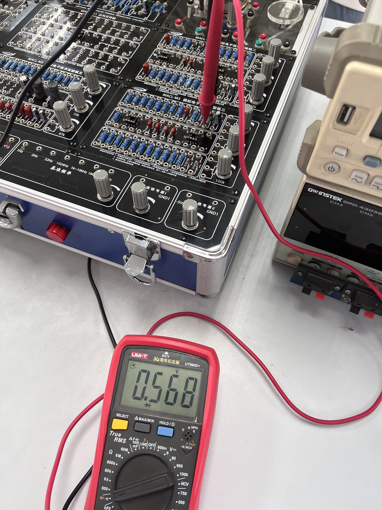
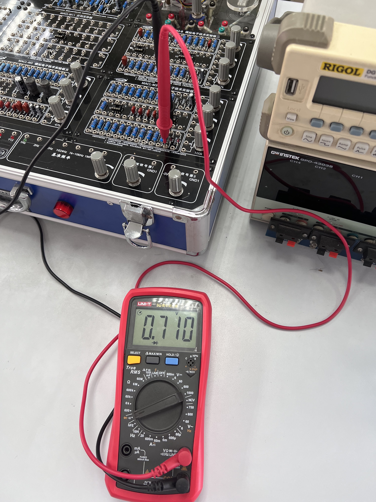
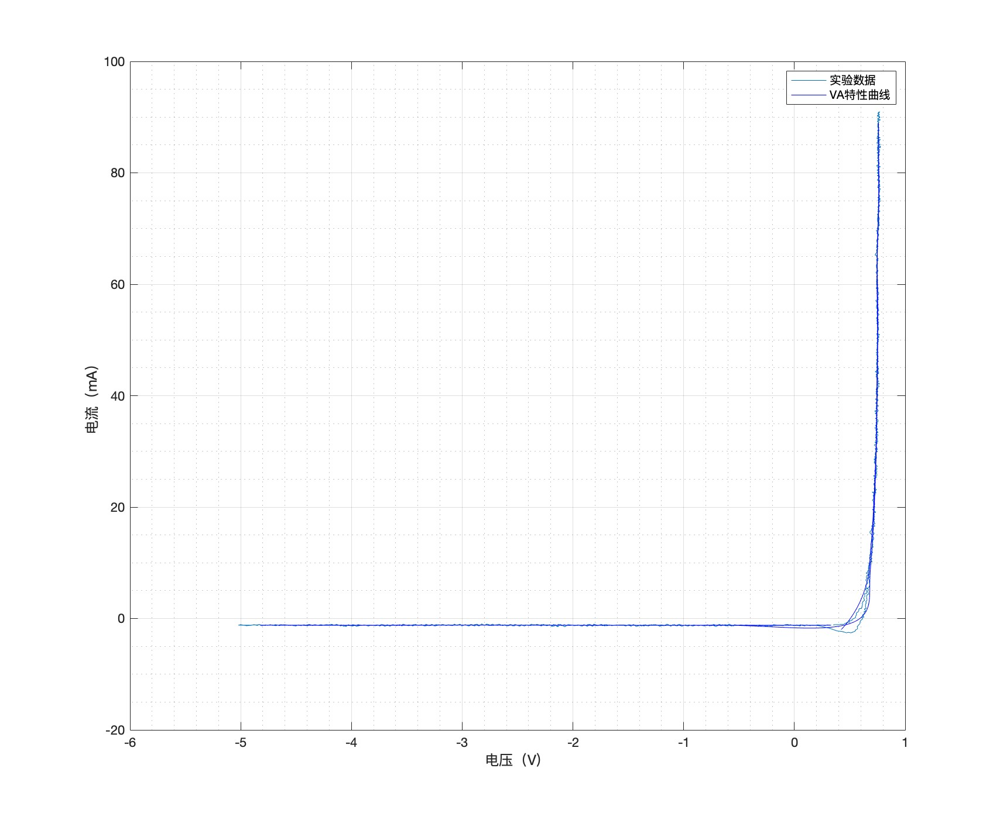
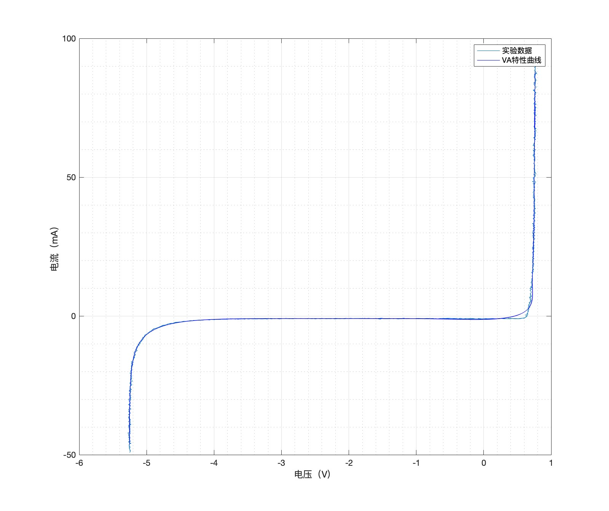
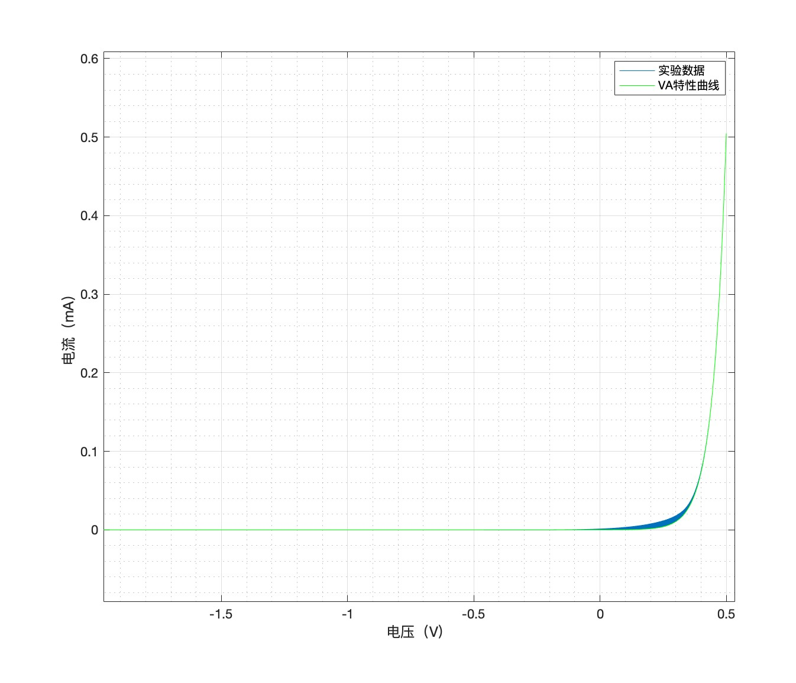
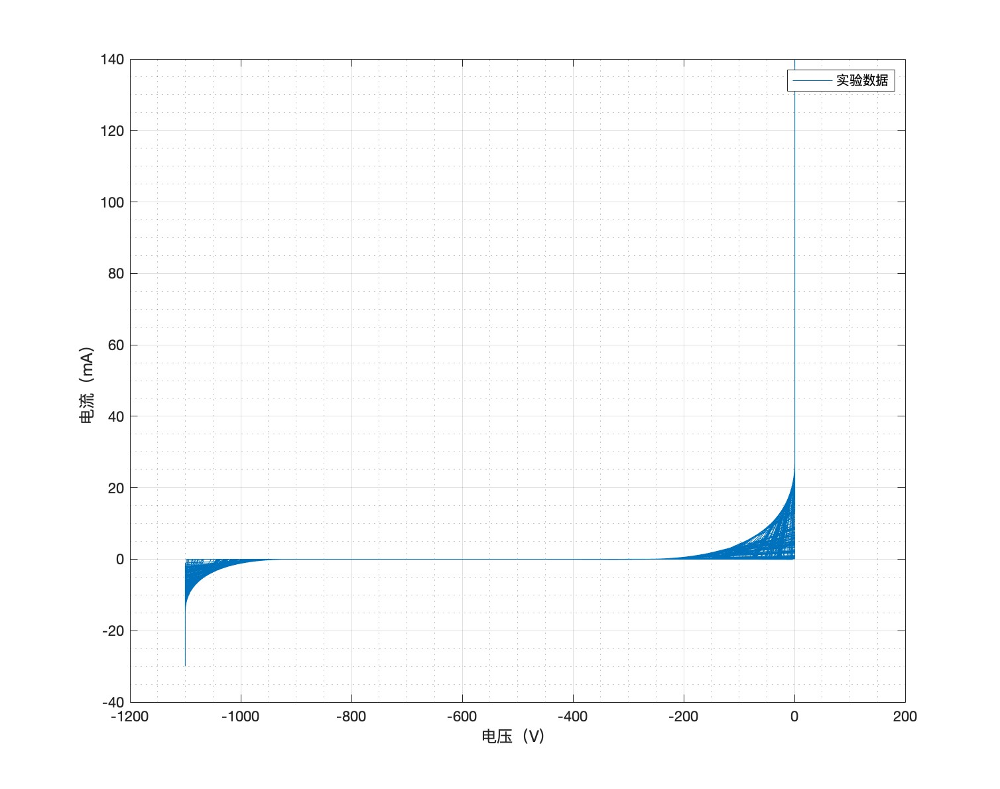
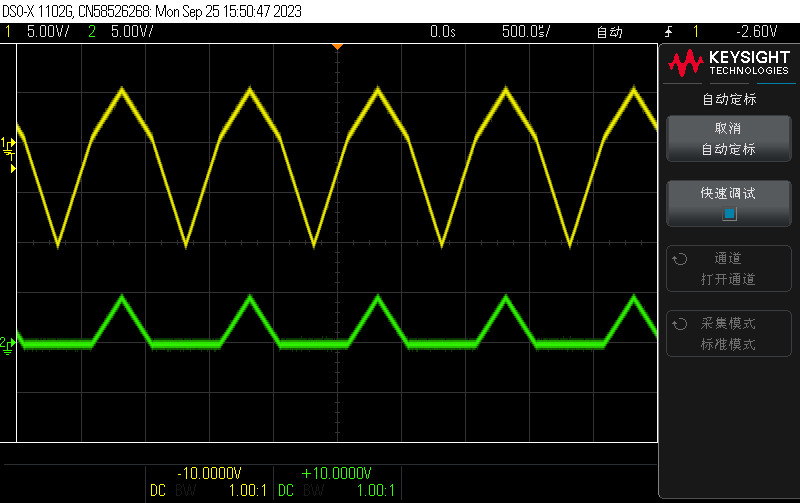
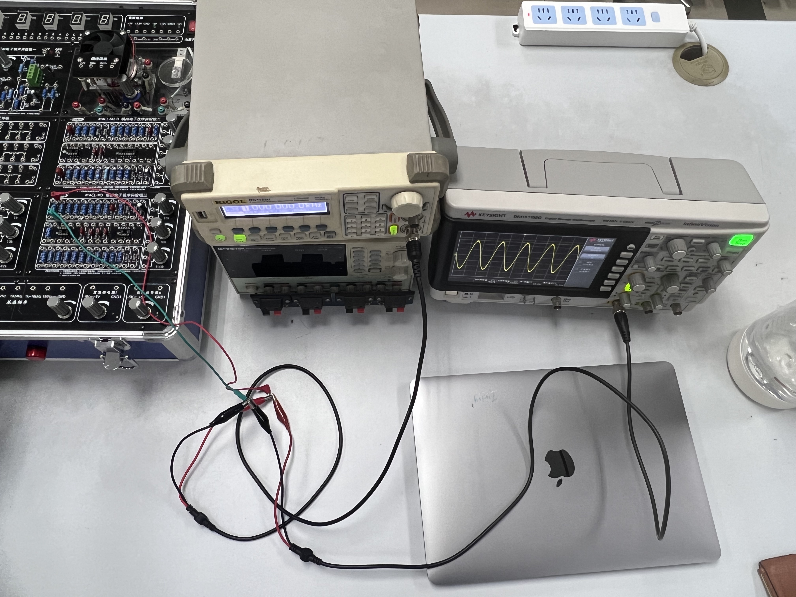

半导体⼆极管特性测试
实验日期：2023/9/26
地点：东3-406
实验目的
- 掌握半导体⼆极管特性测试
- 学习MULTISIM电路仿真软件的使⽤
- 进⼀步熟悉电⼦仪器的使⽤
基本实验内容
实验器材
- 万用表（HY63）
- ADCL-I模拟数字电子技术实验箱中的半导体二极管【1N4007的整流二极管，5V/1W的稳压二极管】
- 连接线
- 示波器（1000 X-Series）
- 信号源（ SDG2000X）
实验方案
本实验首先掌握判断二极管好坏的方法。接着采用三种方法绘制二极管VA特性曲线。具体流程如下：
-
⽤万⽤表粗略判别⼆极管好坏。
-
采⽤逐点测量法测量⼆极管的VA特性。
-
采⽤扫描测量法测量⼆极管的VA特性，并双踪观察信号源与⼆极管两端电压（注意其击穿值）。
采⽤扫描测量法测量稳压管的VA特性，并双踪观察信号源与⼆极管两端电压（注意其击穿值）。
- 应⽤MULTISIM软件仿真⼆极管的VA特性。
实验一：应⽤万⽤表初步测试⼆极管的好坏
测试过程与结果
- 认识万用表测量二极管档


-
将黑表笔插入
COM口，红表笔插入二极管测试对应二极管测试插口，并将档位调至二极管测量档位。由于蜂鸣器档位和二极管是同一档位，点按左上角Select按钮，切换至二极管档位。 -
将万用表红表笔接入1N4007正级，黑色接负极，此时万用表显示二极管导通电压。如下图所示，测得1N4007的正向导通电压约为0.568V。

- 将红黑表笔交换，测量方向电压，如下图所示，显示OL，超出量程。

- 利用相同方法测量稳压二极管，得到相似结果

结果分析
首先通过万用表可以很好地对二极管进行检测，如检验其是否被击穿。同时可以看到，在同样的测量条件下，稳压二极管比整流二极管正向导通电压要高。可以与课上所给的VA特性曲线相联系，万用表所提供的电压为三伏，稳压二极管导通后，电压将保持0.7V左右，而整流二极管的曲线类似于大电阻，因而万用表显示的电压值在0.568V。
实验二：逐点法测量二极管VA特性曲线
实验方案
采用以下电路，利用欧姆定律对二极管在每一点电压下的阻值进行测量。最后利用excel对数据进行处理，绘制曲线。

由于万用表的安培表阻值在该测试条件下（mA级别），视为短路；而相反，电压表的阻值足够大，可以视为开路，所以实验中只使用电压表来进行测量，将电压表并联在R~1~两端。并且利用电压源的示数，通过计算得出二极管两端电压与电流。
测试过程与结果
- 连接电路，并将电压源输出值调为0。

-
将万用表并联在电阻两端，测得电压示数。将此示数和电压源示数，一起记录到excel表格中。
-
逐渐增大电压源输出电压，并重复步骤2。
-
使用excel处理数据，并且绘制曲线，在变化较为剧烈处，增加多组数据测量，从而得到更为光滑、准确的曲线。
数据处理与分析
| 电压源输出电压（V） | R1两端电压（V） | 二极管两端电压（=A#-B#） | 电流（=B#/1000） |
|---|---|---|---|
| 0 | 0 | 0 | 0 |
| 0.3 | 0.0014 | 0.2986 | 0.0000014 |
| 0.403 | 0.0134 | 0.3896 | 0.0000134 |
| 0.452 | 0.0302 | 0.4218 | 0.0000302 |
| 0.502 | 0.0554 | 0.4466 | 0.0000554 |
| 0.55 | 0.085 | 0.465 | 0.000085 |
| 0.602 | 0.1209 | 0.4811 | 0.0001209 |
| 0.703 | 0.1979 | 0.5051 | 0.0001979 |
| 0.803 | 0.281 | 0.522 | 0.000281 |
| 0.903 | 0.3678 | 0.5352 | 0.0003678 |
| 1.102 | 0.5481 | 0.5539 | 0.0005481 |
| 1.202 | 0.645 | 0.557 | 0.000645 |
| 1.3 | 0.739 | 0.561 | 0.000739 |
| 1.551 | 0.976 | 0.575 | 0.000976 |
| 1.751 | 1.169 | 0.582 | 0.001169 |
| 1.851 | 1.265 | 0.586 | 0.001265 |
| 1.951 | 1.362 | 0.589 | 0.001362 |
| 2.151 | 1.557 | 0.594 | 0.001557 |
| 2.451 | 1.851 | 0.6 | 0.001851 |
| 2.751 | 2.147 | 0.604 | 0.002147 |
| 2.951 | 2.344 | 0.607 | 0.002344 |
| 3.551 | 2.938 | 0.613 | 0.002938 |
| 4.551 | 3.931 | 0.62 | 0.003931 |
| 5.551 | 4.928 | 0.623 | 0.004928 |
| 7.65 | 7.02 | 0.63 | 0.00702 |
| 9.55 | 8.92 | 0.63 | 0.00892 |
| 11.049 | 10.42 | 0.629 | 0.01042 |

实验三：扫描法测量二极管VA特性曲线
实验方案
- 将电路连接成下图所示。由于信号源与示波器的接地设置，装置只能设置为如图所示，所有的接地线应该连接在一起。
-
并将信号源设置为1kHz，10Vp的锯齿波。通过信号源的XY显示，展示VA特性曲线直观样式。由于\(U_{diode}=U_{ch1}-U_{ch2},I_{diode}=\dfrac{U_{ch1}}{51Ω}\)，因此，XY曲线一定程度上反映了最终结果的图线。
-
后通过matlab等数据处理，生成正确的曲线。

测试过程与结果
-
连接电路（二极管选择1N4007整流二极管，电阻选择51Ω），调节信号源、示波器，观察图样。
-
利用示波器的USB接口，将图样信息和数据保存。
-
利用Matlab处理信息，生成图像。
Matlab代码如下：
- 将二极管更换为稳压二极管，重复上述步骤。
结果分析
整流二极管

观察到以下几个特殊的地方：
-
截止时，电流不完全为0，由于R~1~两端存在一个非常小的电压，该曲线在截止部分的电流不为0。
-
该曲线在导通与截止部分，存在两条曲线，上面那条曲线一般认为是理想情况下的VA特性曲线。而下面那条曲线说明，二极管存在一个反向的电流。再经过数据分析可知，在截止与导通部分，当二极管两端电压逐渐增大时，即由截止切换到导通模式时，电流增大；而当电压减小时，即由导通切换为截止模式时，存在一个反向电流。后经过资料查询可知，二极管存在一个特性：
二极管方向恢复电流（Reverse Recovery Current） 在二极管由导通状态转变为截止状态时，电流反向流动的现象。当二极管从正向导通状态切换到反向截止状态时，载流子需要一定时间来清除。在这个短暂的时间内，二极管中的电流会反向流动，这就是方向恢复电流。方向恢复电流的大小和持续时间取决于二极管的特性和工作条件。
稳压二极管

可以观察到，稳压二极管的截止电压约为5.2V左右，与标称的5V/1W相匹配，同时可以观察到，稳压二极管相比于整流二极管，在两端电压增大的情况下，能保持一个较为稳定的电压值，约为0.76V左右。
实验三：仿真⼆极管的VA特性
实验方案
利用Multisim平台搭建电路，利用扫描法绘制二极管曲线。
Multisim平台一定需要一个接地端，同时示波器的接地端并不影响电路中的电位，因而实验电路如下：

示波器A接口为二极管两端电压，B接口为R1两端电压。利用示波器的B/A按钮，定性地显示VA特性曲线，再利用Matlab处理输出的数据。
测试过程与结果
- 打开Multisim平台，选择器件，并将器件连接为上图所示。
- 双击信号源和示波器，将信号源调为1kHz每秒，振幅分别为1V和700V，示波器视图为B/A。
- 打开图像视图，导出图像为csv格式。
- 利用Matlab处理csv中的数据。
根据不同曲线的特点，采用了以下两种方式进行数据拟合：
1V，没有为负数的点，因而采用了指数的拟合方式
700V，由于数据点非常多，直接输出即位较光滑的曲线
| Matlab | |
|---|---|
结果分析
1V，主要分析二极管由导通到截止这一段的特点

700V，主要分析1N4007截止电压的特性

可以看出，由导通到截止这一部分，二极管的性质并不是非常稳定，所以曲线几乎填满了该段区域。
探究性实验：信号源内部电阻
引入

观察上面的黄色曲线，会发现，当二极管导通后，峰值电压骤降。而分析可知，Channel1所测的是信号源两端电压，而电压骤降说明了信号源内部有电阻，进行分压，导致其峰值减小。现测量信号源两端的电阻大小。
实验方案
采用以下电路，利用欧姆定律对其进行测量。通过测量峰值电压的变化，得出信号源内部电阻大小

测试过程与结果
- 将示波器接口两端与信号源两端连接。测出原本输出的电压幅值，\(V_{p1}=10.5V\)。

- 连接方案中的电路图。

- 测出此时的电压峰值为，\(V_{p2}=5.23V\)

- 再次测量信号源两端电压，发现保持在10.5V，因此可以将信号源两端电压视为10.5V。
结果分析
计算得到，信号源内阻为51.7Ω，查阅说明书，得知Channel1输出的内阻在50Ω左右，因此可知测量基本准确。
信号源内部有50Ω左右的阻值，所以，以后在定量测量的时候，需要将内阻考虑在内，以免影响最后结果的准确性。